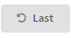

Upload Custom Phrase Set
Set Phrase Amount and Order
Analysis Setting
Welcome to TextTest++, a WEB platform for text entry test. The output of the test data can be seamlessly plugged in the throughput calculation project here . We build our platform purely with JS, thus you won’t worry about network-delay when testing. After loading the webpage, you’re good to go!
P.s. We strongly recommend using Chrome browser, as other browsers might yield unexpected results because of their different implementations of the web api.
By clicking “Settings”, you can find the option Upload Custom Phrase Set. We use the phrase set from Phrase sets for evaluating text entry techniques as default set. Make sure your phrase set uses the following format (one phrase for one line):
phrase 1
phrase 2
…
phrase n
After choosing the phrase file, click upload to import the phrases.
The default order of phrases is the same order as the phrase file. To randomize the test order, you could click the "Shuffle whole set" button.
If you check the box of "Stop test after", and modify the number, then the test will end after the number of phrases are completed.
During the test, the left corner of the input text will show the count of finished phrases. If the user entered all phrases, it will turn to red showing "task done!"
If the user want to re-enter the last phrase (for example, the user accidentally hit Next before finish the current phrase), he/she could click  button to restart the last phrase. However, one can only restart one phrase at one time. All actions of the last phrase before restart won’t be logged in the file.
You can just refresh the webpage to start a new test or restart a test. Remember to set the phrase amount, seed, upload new phrase set (if necessary) and repeat other settings again.
You will notice that when the input text changes, the gray-background area below will change its content. The content shows the information of the text change using the approximation algorithm of T-sequence model.
Congratulations! You’ve finished a test. Now you might want to download the log files and further analyze them. Remember, always hit Analysis before download the file.
Click Analysis button to show the graph of different error rates of the experiment. It is always required before download any file.
A statistic graph will show the different error rates (TER/UER/CER) of the typing process. A typical graph will look like this:
You can set the custom file name or leave the filename section empty, which will generate a file named “TextTest”. Select the type of file and download. You can download all types.
| Type | Contents |
|---|---|
| json | the log file of action information for each phrase |
| csv | the metrics file for each phrase, analyzed from the json file |
(for detailed explanation, please go to “Reference of csv file variable names”)
After analyze or download the experiment, you can always continue the test if you don’t refresh the page. The log file will continue to log the experiment.
You could analyze an existing json file in other experiments as long as the format is the same. After successfully uploading, the error rate graph will appear, and you can download the CSV result of the file.
| Variable Name in CSV | Explanation |
|---|---|
| Trial | Index of the trial |
| Seconds | Total time spent to type the phrase |
| correct_time | Total correct time (delete + substitute) using approximation algorithm |
| entry_time | Total entry time (insert + substitute) |
| Tlen | Transcription string (T) length |
| Plen | Presented string (P) length |
| TCC |
Total Changed Characters during the typing process of the trial TCC = Tlen + 2 × IF |
| IF | IF (Incorrect Fixed) class, contains all deleted characters in the T-sequence |
| INF | INF (Incorrect Not Fixed) class, Minimum string distance (MSD) between P and T |
| C | C (Correct) class, contains correct characters in T |
| WPM | Word per minute |
| TOTPM | Total Word Change per minute |
| AC | Action count, the number of actions taken during the text entry process |
| DAC | Delete action count |
| IAC | Insert action count |
| SAC | Substitute action count |
| UER |
Uncorrected Error Rate UER = INF / (C + INF + IF) |
| CER |
Corrected Error Rate CER = IF / (C + INF + IF) |
| TER |
Total Error Rate TER = (INF + IF) / (C + INF + IF) |
| CPA |
Character per action, indicates the average number of characters changed per action CPA = TCC / AC |
| CPC |
Character change per correct action CPA = TCC / AC |
| CPE |
Character change per entry action CPE = (|T| + IF) / EAC |
| AE |
Action Efficiency, the average number of characters one action can change in a given time period AE = TCC / Total time |
| CE |
Correction action Efficiency, indicating the “text-correcting speed” of actions CE = IF / Correction time |
| EE |
Entry action Efficiency, indicating the “text-entering speed” of actions EE = (Tlen + F) / Entry time |
| IFc | Correct characters in IF |
| IFe | Error characters in IF |
A typical trial will be recorded in the following format:
[
{
"Transcribe": [
{
"Text": "m",
"TimeStamp": 1517175820224
},
{
"Text": "my",
"TimeStamp": 1517175820417
}
],
"Action": [
[
"insert",
0,
1
],
[
"insert",
1,
1
]
],
"Trial": 0,
"Present": "my watch fell in the water",
"IF": 0,
"INF": 24,
"C": 2,
"CER": "0.000",
"UER": "0.923",
"TER": "0.923"
}
]